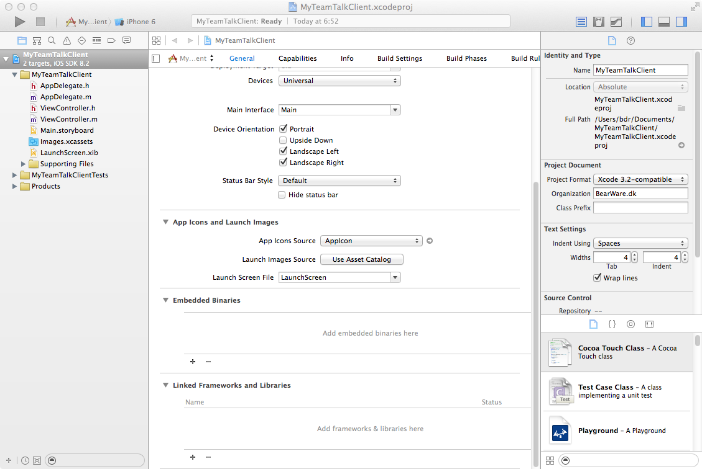
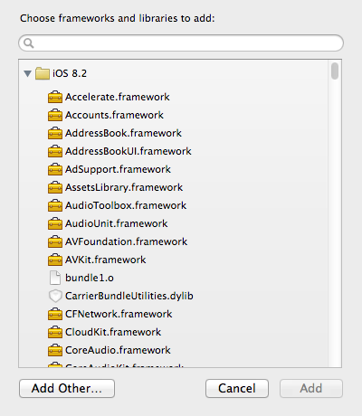
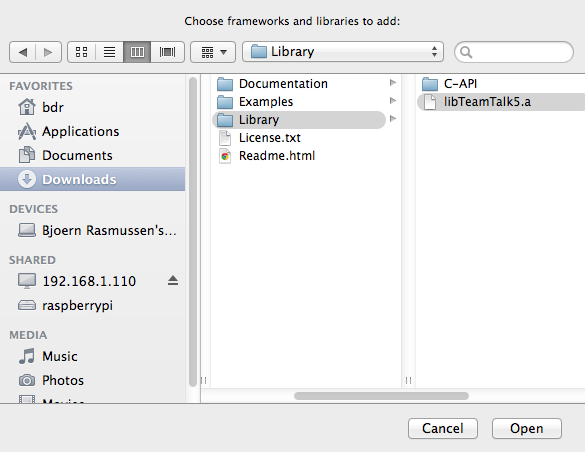
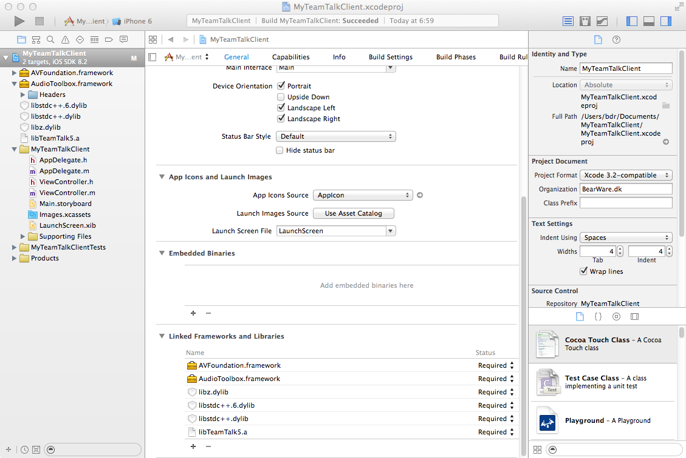
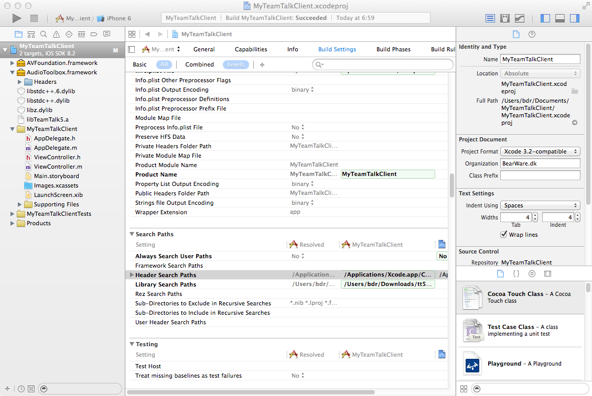
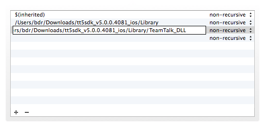
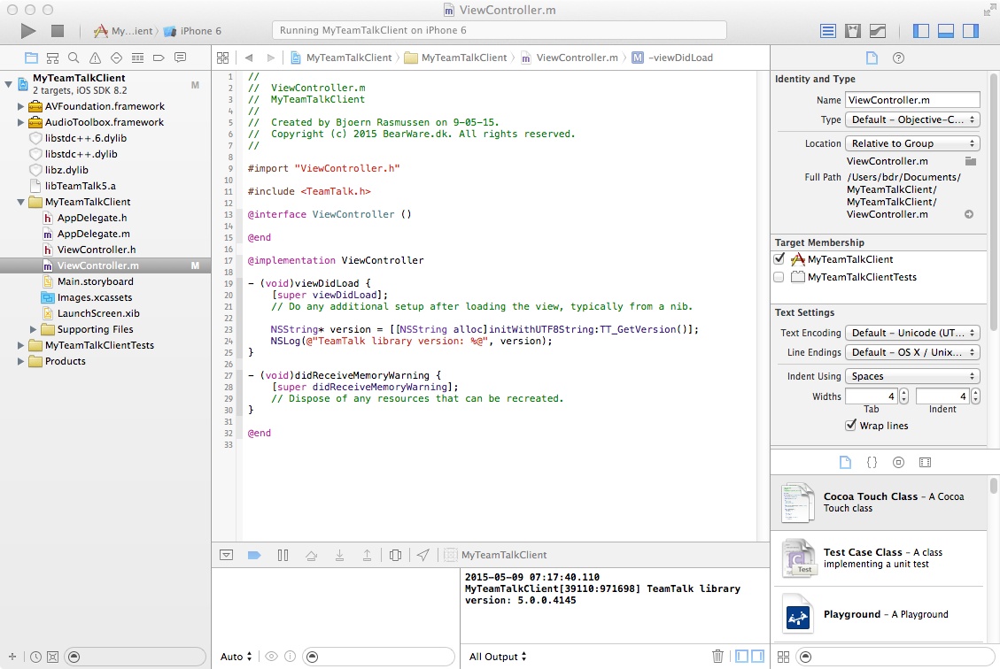

- Generated by
 1.9.1
1.9.1
|
TeamTalk 5 C-API DLL
Version 5.22A
|
The TeamTalk C-API library is located in the Library folder.
The following sections explain how to set up the TeamTalk DLL so it can be used in a development project on a given platform.
On Windows the TeamTalk DLL requires Windows 7/8/10. The TeamTalk DLLs are available as both 32 and 64-bit so ensure correct DLL is being used for the architecture.
To access the TeamTalk API in a project the TeamTalk.h file must be included. Prior to including the TeamTalk.h file the windows.h file must have been included since the TeamTalk API depends on types specified by the Windows header file.
The TeamTalk import library must be provided to the compiler's linker so resolve its dependencies.
When running an application which uses the TeamTalk DLL on Windows ensure that the DLL is in the working directory of the application or the directory is in the PATH variable.
On Mac OS X the directory of the DLL (shared object) must be in the DYLD_LIBRARY_PATH environment variable.
On Linux the directory of the DLL (shared object) must be in the LD_LIBRARY_PATH environment variable.
The TeamTalk DLL has dependencies to ALSA and OpenSSL so ensure the dependencies are installed (typically called libasound2 and libssl).
Here's a guide on how to set up an iOS project in Xcode which uses the TeamTalk library.
First create a new Xcode project, in this case "MyTeamTalkClient".

Next scroll to the "Linked Frameworks and Libraries" and click the "+" button. The following dialog will appear:

Add the following library dependencies:
AVFoundation.framework AudioToolbox.framework libstdc++.6.dyliblibstdc++.dyliblibz.dylib Finally add the TeamTalk static library by clicking "Add Other..." in the frameworks dialog and locating the TeamTalk static library in the unzipped TeamTalk SDK folder:

The Xcode project should now look as follows:

Navigate to "Build Settings", enable "All" and "Levels" in the toolbar header. Locate "Header Search Paths" as shown here:

Add the TeamTalk SDK's include file directory to the list of search paths:

The Xcode project is now ready to compile. Here's an example where the TeamTalk library's version number is printed:
